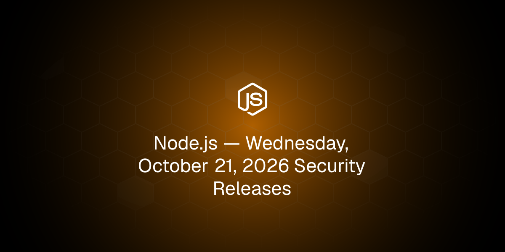
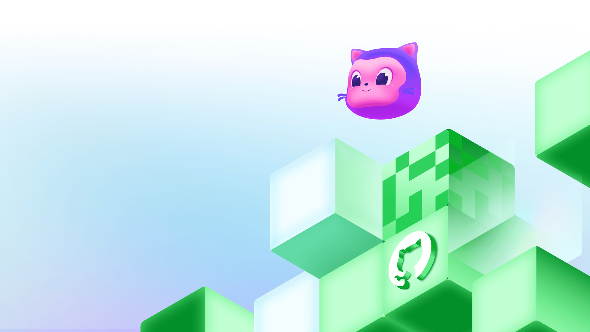
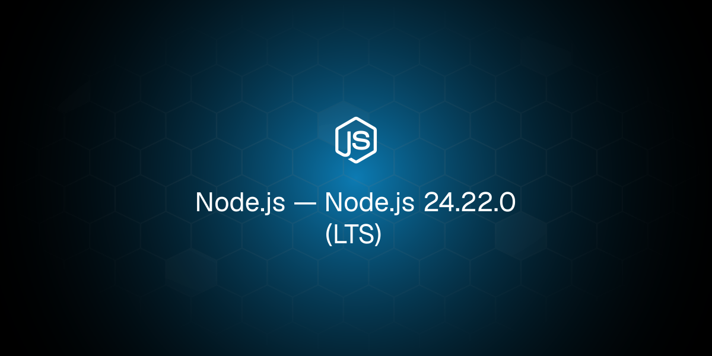
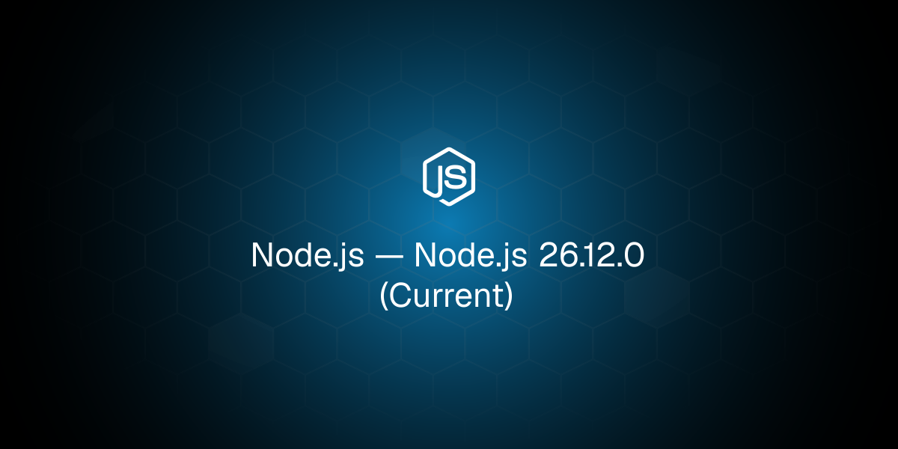
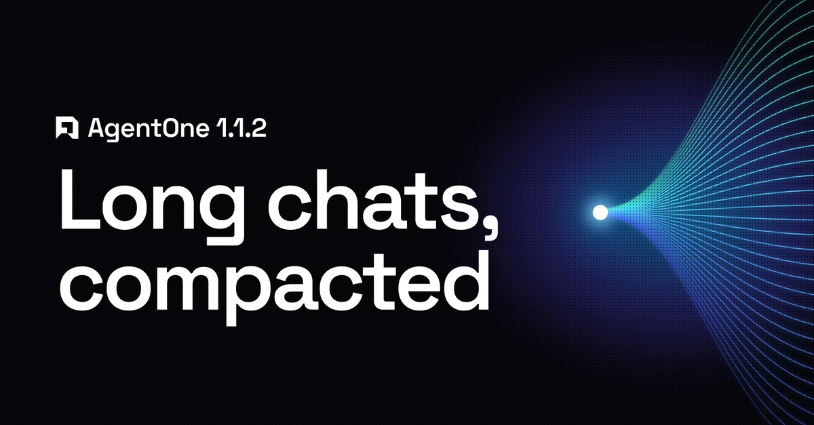
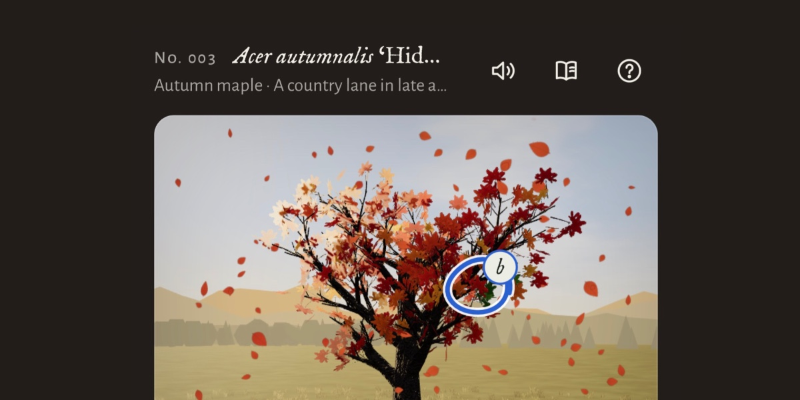
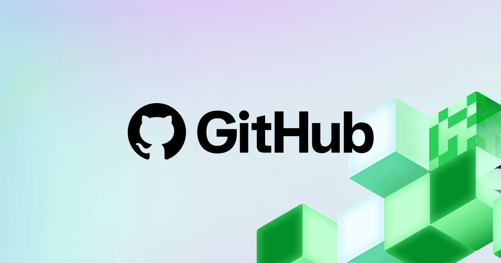
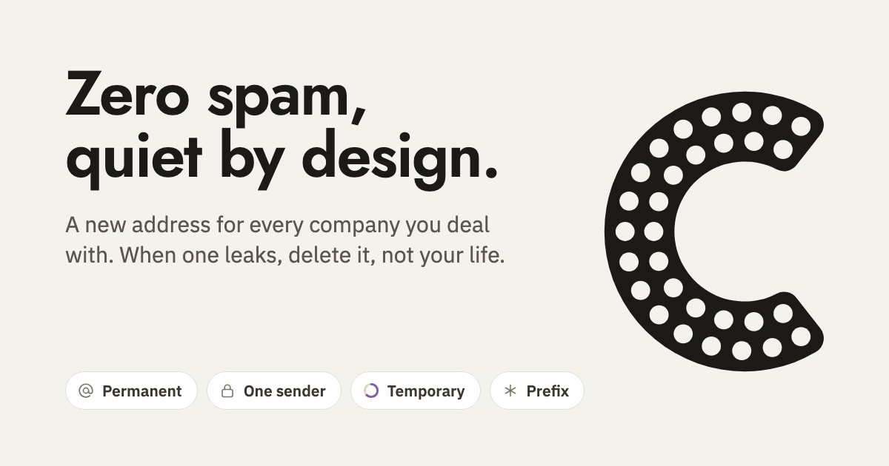
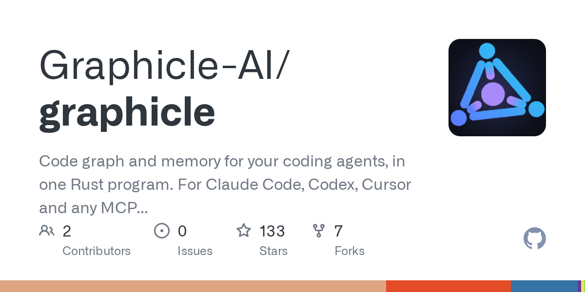
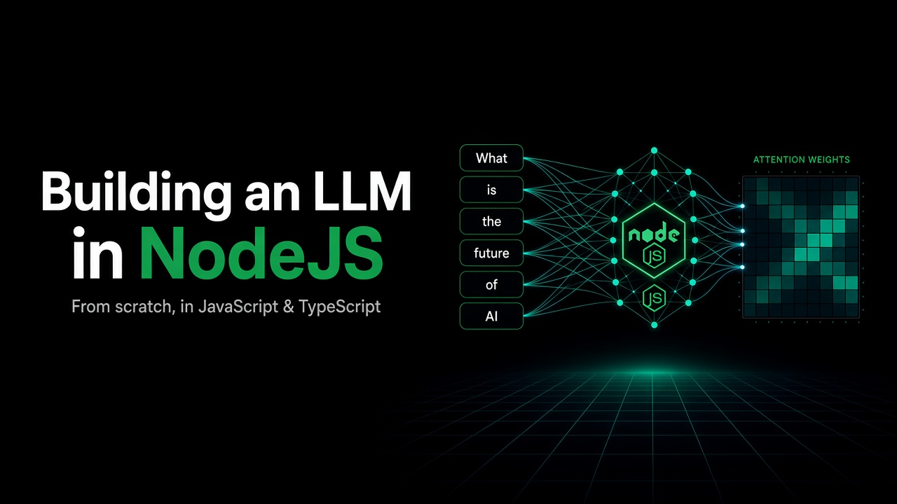

🔥 Top 3 (must read)
Node.js Security Releases — Wednesday, October 21, 2026
The Node.js team has announced security releases for Wednesday, October 21. The post lists which release lines are affected, so teams can plan upgrades before the patches come out. Why it matters: You run Node.js backends. Plan a patch window for next week now, so you are not rushing on the day.

From 2,500 requests to 24: Rebuilding star history without the stargazers
GitHub rebuilt its repo star history API. It now returns trends without sending back each user's identity and without unbounded database work. The post explains the engineering tradeoffs behind the cut from 2,500 requests to 24. Why it matters: This is a real system design case study. It shows how to cut request load and protect privacy at the same time, and the same idea fits many "history/trend" APIs.

Why Is My Kubernetes Job Still Pending? Tracing Kueue Admission with Headlamp
In clusters managed by Kueue, a Job can stay suspended with no Pods and no logs while Kueue decides whether it can use the requested resources. The post shows how to use Headlamp to trace that admission decision. Why it matters: "Pending with no logs" is a common SRE pain. This gives your team a clear way to debug it instead of guessing.
K
🛠 Tools & releases
Node.js 24.22.0 (LTS)
: new LTS point release. This is the line most production backends should follow.

Node.js 26.12.0 (Current)
: new Current release, useful for trying upcoming features before they reach LTS.

Turn Gmail into a Free Serverless Email API in 5 Minutes
: a simple way to send transactional emails (contact forms, cron failure alerts, internal tool pings) without paying for an email provider.
🤖 AI for developers
AgentOne 1.1.2
: adds context compaction, so long chats keep working after they hit the context window limit (how much text the model can see at once). Also adds chat history, searchable settings and 60 new providers.

Tree Appreciator (Simon Willison)
: a three.js game built only from the Claude iPhone chat app (not Claude Code) with Opus 5.5. A good example of how much you can now build from a single prompt.

AI is mass decompiling games
: AI-powered decompilation is driving game mashups and preservation projects, often running in the browser with WebAssembly. Useful context on what AI can now do with existing binaries.
S
I kept losing my Claude artifacts, so I made a mod
: a small tool to keep track of claude.ai artifacts you come back to often.
👔 Engineering & teams
GitHub availability report: September 2026
: two incidents caused degraded performance across GitHub services. Worth a quick read if your CI/CD depends on GitHub, and as a model for writing your own incident reports.

🎯 For me
Node.js: 24.22.0 LTS and 26.12.0 are out, and security releases are coming on Oct 21. Upgrade to 24.22.0 now, then patch again next week.
Infra/SRE: the Kueue + Headlamp debugging guide and GitHub's star-history redesign are the two best system-design reads today.
AI for devs: the AgentOne compaction feature and Simon Willison's one-prompt game show where coding assistants are going.
💡 App ideas & indie builds
Petal
(HN): an open-source, free replacement for CoScreen/ScreenHero (shared-screen pair programming). Problem: good multi-user screen sharing for remote pairing is gone or paid. Inspiration: rebuilding a much-loved dead product as open source can find users quickly (132 points).
P
Clova
(HN): an email app where each inbox accepts only one sender. Problem: inbox overload and mixed-up senders. Inspiration: one strict rule can turn an old category into a new product, and the 69 comments show it starts debate.

Leonardo da Vinci 3D museum
(HN): a guided 3D museum built in code. Problem: online museums feel flat and are hard to explore. Inspiration: a good model for learning content as a guided, explorable space, not a list of pages.
M
Graphicle
(HN): a Rust port of Graphify that adds memory for coding agents. Problem: coding agents forget project context between sessions. Inspiration: "memory layer for agents" is an open space for small tools.

Building an LLM from Scratch in TypeScript
(HN): a book that teaches how LLMs work using TypeScript. Problem: most LLM learning material assumes Python. Inspiration: teaching a hot topic in the stack your audience already uses is a simple niche.

🎓 Try this
Read the Kueue + Headlamp tracing guide. Next time a Job hangs in "Pending" with no Pods, follow its steps to see why Kueue has not admitted it. Then add the steps to your team's on-call runbook.